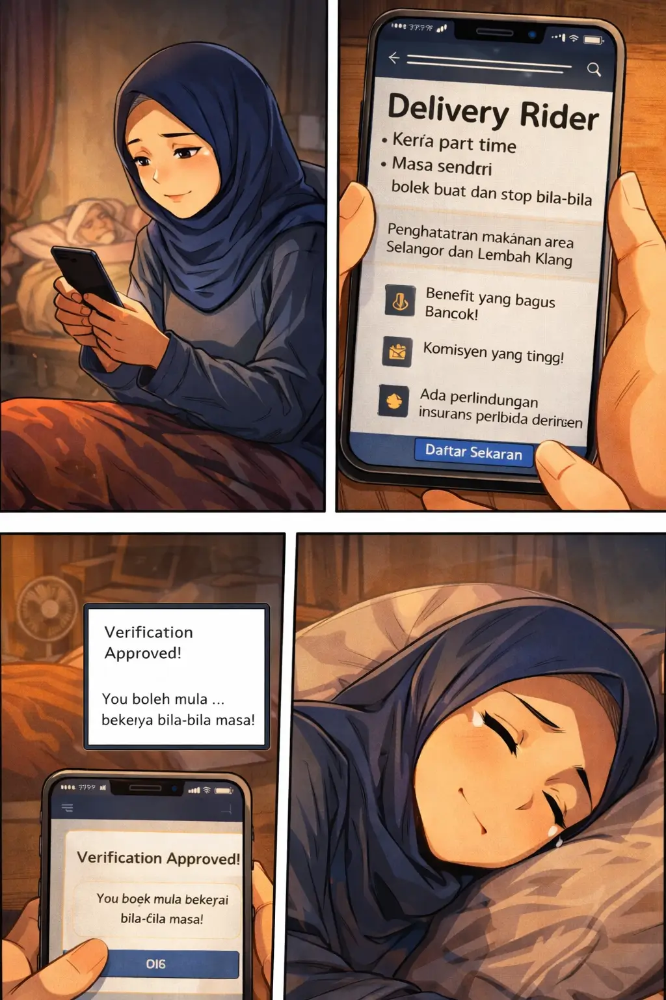

Malam Yang Tenang
Peluang Di Sebalik Skrin
Selepas selesai makan dan memastikan ibunya telah tidur dengan selesa, Putri melangkah masuk ke bilik kecilnya. Di atas katil, bertemankan cahaya lampu jalan yang samar dari luar tingkap, dia mula membelek telefon pintarnya. Jari-jemarinya laju menatal skrin, mencari satu perkara: peluang kerja sambilan yang fleksibel.
Daftar Sebagai Delivery Rider (Sambilan)
Kawasan: Shah Alam, Selangor & Lembah Klang
Masa Bebas: Buka/tutup aplikasi bila-bila masa.
Komisyen Tinggi: Insentif tambahan waktu puncak.
Perlindungan: Insurans peribadi percuma disediakan.
✅ VERIFIKASI ONLINE LULUS
Akaun anda aktif. Sedia untuk kayuhan pertama.
Selepas memuat naik dokumen pengenalan diri dan lesen memandu, skrin telefonnya berkelip hijau menandakan proses verifikasi telah berjaya sepenuhnya. Satu keluhan lega dilepaskan. Dengan hati yang lebih tenang dan penuh harapan baru untuk hari esok, Putri meletakkan telefonnya ke tepi, melabuhkan kepalanya ke atas bantal usang, lalu perlahan-lahan dijemput mimpi dalam keheningan malam Shah Alam.